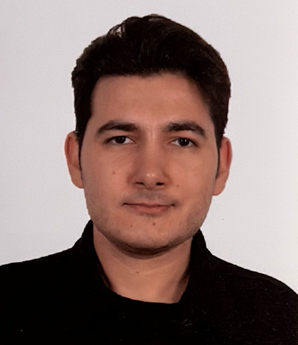

Ata Tolga Tasdelen

Summary
I am a newly graduated Computer Engineering and Electrical & Electronics Engineering student who likes to work hard and is a very planned person.
Education
- Istanbul Beykent University
- Electrical & Elecronics Engineering (2019-2023) GPA: 3.18
- Computer Engineering (2020-2024) GPA: 3.23
Work Experience
Olusum Grup
-
Accountng Intern (2017-2018)
Avrasya Otomasyon Elektrik ve Otomotiv
-
Electrical Engineering Intern (2022)
Metro Istanbul
-
Electronics Engineering Intern (2023)
Sariyer Municipality
-
Computer Engineering Intern (2024)
Personal Experiences
- As a graduation project, I built a smart watch that is linked to an Android smartphone, which has its own applicaton.
- I worked on an Arduino project, a toy car that is linked va Bluetooth to a remote.
- I often assemble and fix electronic devices such as gaming consoles (PlayStaton).
- I was specifically selected by academic members to lead my classmates in 'Databases and Algorthms' and 'Embedded Systems' classes.
- I worked on a second graduaton project for my second major: a smartphone socal app to adopt animals.